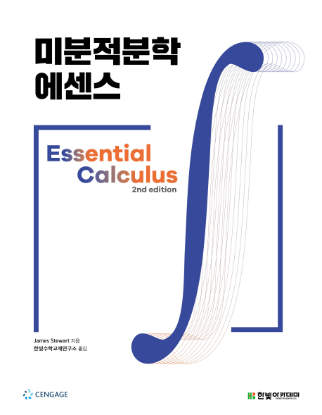

미분적분학 추천도서

목 차
- 함수와 극한
- 역함수
- 도함수
- 도함수의 응용
- 적분
- 적분법
- 적분의 응용
- 급수
- 매개변수 방정식과 벡터
- 편도함수
- 중적분
본 저서를 추천하는 이유: 본 미분적분학 책은 신입생들이 어려워 엡실론-델타 논법을 생략하고 고등학교 수학
교과서와 같은 방법으로 극한을 정의하고 있다. 엡실론-델타 논법은 엄밀한 극한의 정의이나 갓 고등학교를 졸업한
신입생들에게는 부담이 되는 내용이다. 본 저서는 엡실론-델타 논법 대신 고등학교 수학의 방법을 이용하여 집필된
미분적분학 저서여서 신입생들이 부담없이 기초 미분적분학에 대한 학습을 할 수 있을 것으로 기대된다.